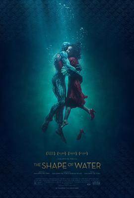

水形物语 / The Shape of Water
又名：忘形水(港) / 水底情深(台) / 水形奇缘 / 水之形 / 水的形状 / 水无常形
作品信息
| 导演 | 吉尔莫·德尔·托罗 |
| 编剧 | 吉尔莫·德尔·托罗 / 瓦内莎·泰勒 |
| 主演 | 莎莉·霍金斯 / 道格·琼斯 / 迈克尔·珊农 / 理查德·詹金斯 / 奥克塔维亚·斯宾瑟 / 迈克尔·斯图巴 / 大卫·休莱特 / 尼克·瑟西 / 斯图尔特·阿诺特 / 尼格尔·本内特 / 劳伦·李·史密斯 / 马丁·罗奇 / 阿莱格拉·富尔顿 / 约翰·卡普洛斯 / 摩根·凯利 / 马文·凯伊 / 德鲁·维尔戈维尔 |
| 类型 | 剧情 / 爱情 / 奇幻 |
| 制片国家/地区 | 美国 / 墨西哥 |
| 语言 | 英语 / 美国手语 / 俄语 / 法语 |
| 上映日期 | 2018-03-16(中国大陆) / 2017-08-31(威尼斯电影节) / 2017-12-01(美国) |
| 片长 | 123分钟 |
| IMDb | tt5580390 |
最后一次看到是 2026-08-12T21:12:02+08:00 · 豆瓣原页